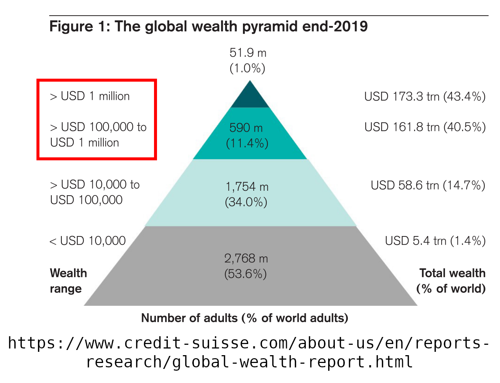
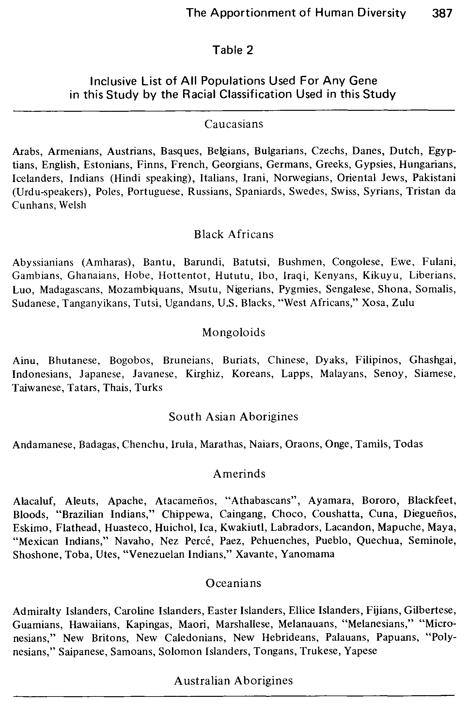
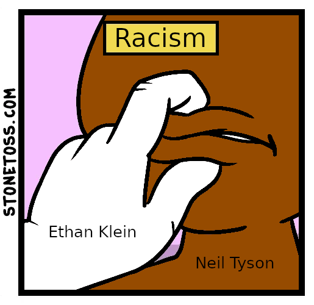
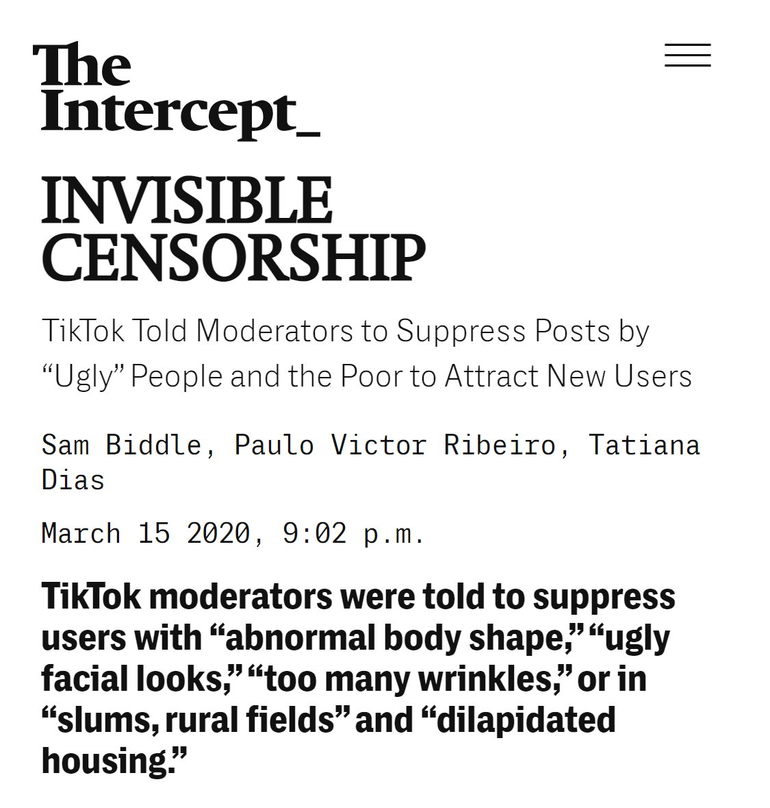
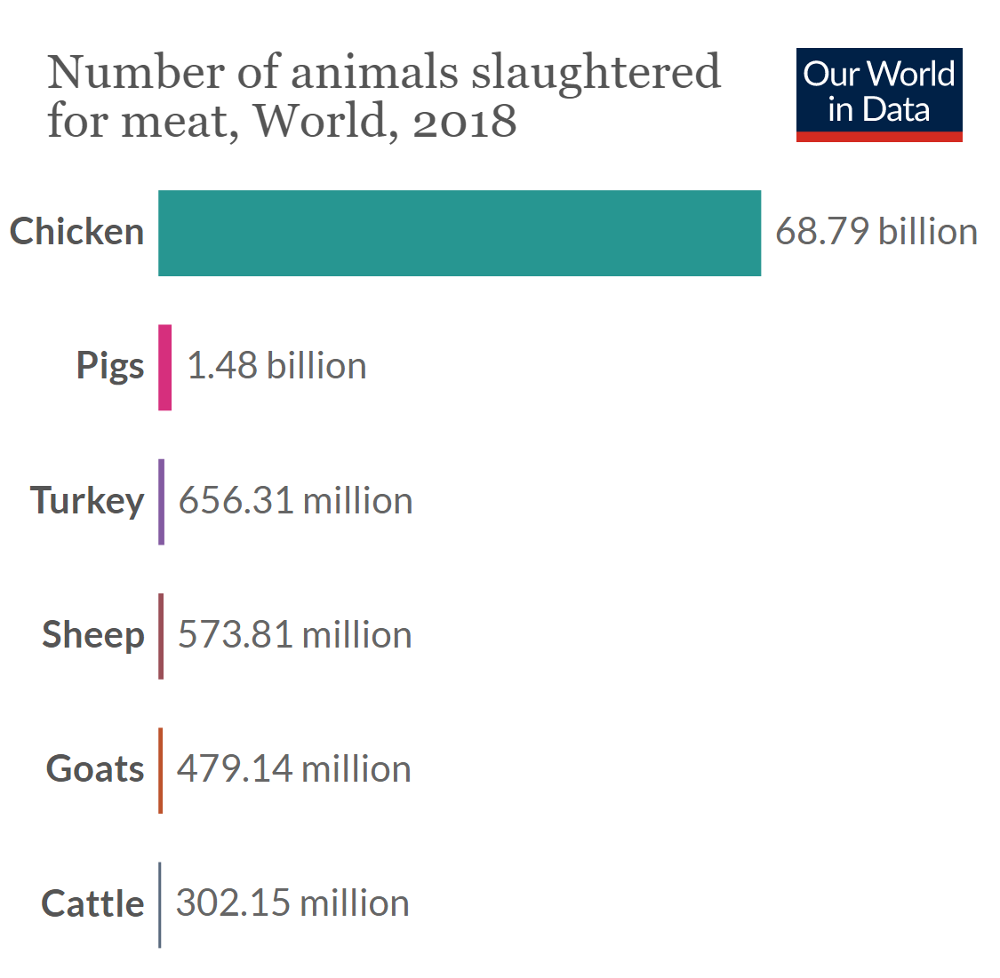
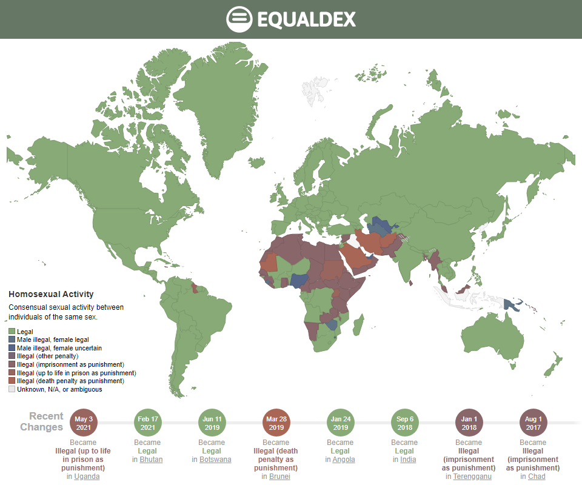
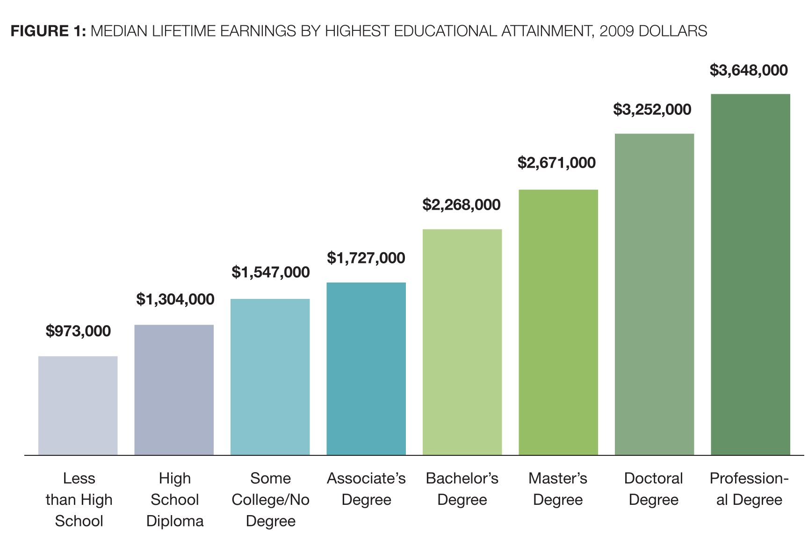
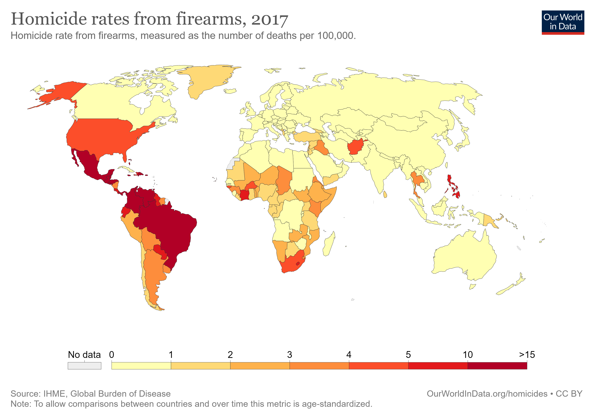
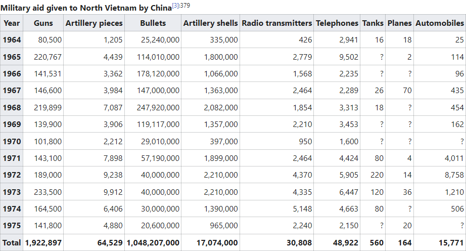

Whenever Ethan Klein is caught saying racist things, Ethan uses Youtube's Creative Studio Video Editor "Trim feature to trim out the specific racist minutes without deleting the entire Youtube video. But he doesn't delete things from the podcast RSS.
"#4 - iDubbbzTV," Ethan Klein said the N word. Interestingly, Ethan did not delete the video of himself saying the N word. However, in "#29 - Jacksfilms & Erik of Internet Comment Etiquette," Ethan went on a 20 minute drunken rant defending his usage of the N word, and Ethan did delete this. The timestamp is 03:18:49. to 03:39:00.
"#145 - We Actually Stormed Area 51," Ethan participated in a meet and greet at Rip-n-dip, and was surprised when the security guards were 6'5 black men.
Ethan apologized for the above audio clip in "Jake Paul Arrested For Looting & The Karen Invasion - H3 Podcast #193 Ethan claimed the racist clip was taken out of context. However, if you listen to the full audio, it is in context.
"Old People Angry About "OK Boomer" & FaZe Jarvis - H3 Podcast #156," Ethan theorized that blacks love fried chicken.
"#164 - We're In YouTube Rewind," Ethan criticized the BTS boyband. #h3h3isoverparty was trending on twitter, and so Ethan deleted this xenophobic clip. Then Ethan made an entire 1.5 hour podcast where Ethan refused to apologize, the episode was called "#165 - K-pop Stans Cancel Us On Twitter and Youtube deleted it for xenophobia.
"#83 - Meme Royale & PewDiePie vs T-Series," Ethan described Indians like janitors, many Indians on Youtube and Reddit were offended and so Ethan deleted this clip.
https://youtube.com/watch?v=TIQygnbGP-I
https://www.youtube.com/watch?v=XPk7BCINr8c
According to Global Wealth Report all the world's wealth in 2019 added up to a grand total of 399.179 trillion in U.S. dollars. In 2019 there were 7.674 billion humans. If we evenly distribute all of the world's wealth, then each human would have a net worth of $52,017. If your net worth is worth more than $52,017 then you are contributing to wealth inequality. If your net worth is $52,017 then you are oppressing noone. If your net worth is $52,017 times 3, then you are oppressing 2 humans. And so on. For example, the world's wealthiest is Jeff Bezos who has a net worth of $187.5 billion. Jeff Bezos is oppressing 3,604,585 humans. Trevor Noah's net worth is $100 million, so Trevor Noah is oppressing 1,922 humans. 1,922 humans are struggling to pay rent and nearly starving to death because of Trevor Noah's greed. The oppressors are billionaires, millionaires, AND hundred-thousandaires. 12.4% of adults have a net worth greater than $100,000. >$1,000,000 are the one percent.
The theory of race being a social construct originated from a 1972 science article titled "The Apportionment of Human Diversity" by Richard Lewontin. All humans have the same exact 99.9% identical DNA, 00.1% creates all the diversity. Of that 00.1%, Richard Lewontin concluded 85.4% are mutations which are truly unique per individual human. 14.6% are mutations which categorizes humans into racial classes. Since 14.6% is a very tiny percentage, the implication is that we shouldn't judge people based on their 14.6% race, because genetically speaking every human is 85.4% unique.
14.6% was too high a number for Richard Lewontin. That is why Richard Lewontin used fake science to shrink 14.6% down to 6.3%. Richard Lewontin observed how the 14.6% naturally coalesced into racial classes, but he realized only 6.3% coalesced neatly into the standard model of the human races. Below is the standard model of the human races used by Richard Lewontin. For example, he put Indians in the same category as Germans. And because of that the American Anthropological Association says genetically speaking each human is 6.3% race and 93.7% unique.

On August 4 2019, the african-american scientist Neil deGrasse Tyson argued that we should be more worried about viral pandemics than mass shootings so Ethan Klein went on a 20 minute rant where Ethan told Neil "Shut the fuck up you fucking imbecile you fuckin idiot motherfucker I edited this stonetoss photo below to depict why Ethan is racist. Ethan reffered to Neil as "Smoke the Grass Tyson white supremacists commonly depict blacks as drug addicts. Then Ethan made a racist impression of a black jamaican smoking marijuana. Ethan said "smoke deGrasse mon." "Mon" is a common phrase in jamaica. In 2019, marijuana was illegal in Jamaica, so literally Ethan described Jamaicans as criminals. Hila said "Yours truly a reference to OJ Simpson's twitter bio, putting Neil Tyson in the same category as OJ Simpson. In a previous podcast, Ethan described OJ Simpson as "a known murderer Ethan & Hila's employee Daniel Swerdlove described Neil Tyson as "This shit makes me miss Carl Sagan "Shit" is a reference to Neil's skin color. That is so racist like they are saying that Neil Tyson is unoriginal and an imitation of a white scientist. And the craziest part is Neil Tyson's rhetoric was correct all along because a few months later the coronavirus pandemic began.
Ethan's main argument is that there is nothing we can do to prevent viral pandemics, the best we can do is hope that a scientist finds a cure, but we could easily pass gun reform laws to defeat white supremacy. Ethan is wrong. There is so much we can do to prevent viral pandemics. All major viral pandemics orginated from meat consumption, if everyone stopped eating meat, there would be far fewer pandemics. The process is called zoonosis, when the blood of two animals touch, it causes viral mutations. That is why coronavirus originated from bats, as bats drink blood it mixes bloods from different animals. Bats infect livestock, and then the livestock infects humans. A pandemics starts when a human has a tiny cut on their hand while handling raw bloody meat, so when the human blood touches the animal's blood. Zika virus, West Nile virus, and Yellow Fever virus all orginated from mosquitos, mosquitos drink blood. The Bubonic Plague originated from fleas, fleas drink blood. The zoonosis process is why most scientists agree HIV originated from humans eating monkey meat, PBS.org says "The majority of HIV researchers subscribe to the bushmeat theory. " Also, most scientists agree tuberculosis, leprosy, cholera, smallpox, measles, influenza, the common cold, syphilis, ebola, the Spanish Flu, it all originated from humans eating meat Slaughterhouses are disgusting with feces, urine, and blood, the perfect environment for diseases mutations, so these slaughterhouses require hazmat suits and antibiotics to prevent outbreaks, and 80% of antibiotic usage is consumed by the meat industry The World Health Organization says "Antibiotic resistance is one of the biggest threats to global health, food security, and development today. Antibiotic resistance means microbes are learning how to survive the antibiotics.

"Jake Paul Fight was a Disaster #244" When discussing George Floyd, Ethan said "Why can't they just admit the trial was fair. Did anyone actually watch the fucking trial. The guy had no chance. He was caught murdering someone for 9 minutes on video. He has 18 complaints on his record, you know this is not a good dude."
Ethan Klein was caught being xenophobic against asians, that's why Ethan Klein's Youtube video "#165 - K-pop Stans Cancel Us On Twitter" was removed for xenophobia. The experts at Youtube unequivocally decided that Ethan Klein's statements was xenophobia. Ethan Klein was caught saying the N Word on video. Ethan Klein has thousands of complaints in twitter comments. Obviously, Ethan Klein is racist, you know this is not a good dude.
Ethan Klein described OJ Simpson as "We have to remember that this guy is a literal murderer, he visciously killed two people with a knife, and cut their heads off. Do we all agree that OJ Simpson is guilty? I love how everyone points to the justice system as the end all be all." Dan replied "It's a fundamental misunderstanding. When you are acquitted, it doesn't mean you are innocent. That's why they call it not guilty." Ethan described Michael Jackson as "I'm a critic of Michael Jackson, I think he is a filthy pedo." According to Presumption of Innocence law, everyone is innocent until proven guilty. According to Double Jeopardy law, once you are acquitted of a crime, you are innocent forever. Legally speaking, Michael Jackson never molested anyone, and legally speaking OJ Simpson never murdered anyone. So even if new evidence emerges, even if OJ Simpson wrote a book titled "I Did It: Confessions of a Murderer," OJ Simpson is still innocent forever. But if new evidence emerges at anytime Derek Chauvin could be released from prison by the Innocence Project. It happened to Bill Cosby who went to prison for rape, served two years in prison, and later was found to be innocent. Bill Cosby tweeted "I have never changed my stance nor my story. I have always maintained my innocence." Why is Ethan Klein allowed to question the trial of Michael Jackson and OJ Simpson, but I am not allowed to question the trial of George Floyd's murderer?
"#168 Jack & Eric"
"#124 Belle Delphine Responds & Free A$AP Rocky"
"#107 Leaving Neverland & R. Kelly Breakdown"
If you are not doing well on TikTok, that's probably because you are ugly.

Between 1961 and 2018, humanity murdered 1,792,182,535,000 chickens. The average human consumes 9 whole chickens per year.

22.5% of humans live in a country where homosexuality is outright illegal. Afghanistan, Brunei, Iran, Maldives, Mauritania, Saudi Arabia are the countries where homosexuality may result in a death penalty. Also, LGBT death penalty is allowed under specific jurisdictions of Emirates, Iran, Nigeria, Pakistan, Somalia, Yemen

The USDA estimates it costs $233,610 to raise a middle classed american child from birth to age 17. It does not include the cost of sending that child to college.
The amount of money you will earn in your entire lifetime according to your education certification

In 1996, China passed a law that today prevents average chinese civilians from owning guns. The only type of guns chinese civilians are allowed to own are hunting rifles, a hunting permit is required. China's gun laws are viewed as a success. USA has a firearms homicide rate of 4.63 per 100,000 inhabitants. China has a firearms homicide rate of 0.04 per 100,000 inhabitants. American civilians own 120.5 guns per 100 civilians. Chinese civilians own 3.6 guns per 100 civilians.

It is interesting how China is against it's own citizens owning guns, and yet China gave guns to Islamic State terrorists. 43.5% of Islamic terrorists got their military weapons from China. In 2004, the USA realized China sold missiles to Islamic terrorists, and the USA reacted by passing a law that today prevents americans from purchasing made-in-china weapons. Why would China sell weapons to terrorists? Historians call it Proxy Warfare. Historians call it Proxy Warfare. China and the USA have always been at war, with poor countries being used as pawns/proxies. If a poor country is turning into a communist governemt, the USA provides military and financial aid to force the poor country into a capitalist government. One example of Proxy Warfare is the Nicaragua Revoluton, Nicaragua was turning into a communist government, so the USA provided financial and military aid to the capitalist Contras, and China provided financial and military aid to the communist Sandinista. Another example of Proxy Warfare is the Vietnam War, China gave weapons to the communist North Vietnam.
Historians call it Proxy Warfare. China and the USA have always been at war, with poor countries being used as pawns/proxies. If a poor country is turning into a communist governemt, the USA provides military and financial aid to force the poor country into a capitalist government. One example of Proxy Warfare is the Nicaragua Revoluton, Nicaragua was turning into a communist government, so the USA provided financial and military aid to the capitalist Contras, and China provided financial and military aid to the communist Sandinista. Another example of Proxy Warfare is the Vietnam War, China gave weapons to the communist North Vietnam.

Women in Saudia Arabia barely received the right to legally drive cars on June 2018. In religous text Hadith Volume 1, Book 6, Hadith 301 a prophet named Muhammad said two women's intelligences combined is equal to one man's intelligence, therefore women are intellectually inferior. Here is a video of Saad Al-Hajari explaining why female drivers ought be criminalized. Video source: Asem Saleh
Abdul Majeed al-Zindani is the founder of Iman University, he is one of the most intelligent scientists. Abdul Majeed al-Zindani found the cure to AIDS, and in this below video he also found proof that men are inherently smarter than women. Video Source: Memri.org
This is islamophobia. Video source: @thisisaims
This is one of Al-Qaeda's training camps for children. Video source: DailyMail @TheIntlHerald
This woman named Rokhshana was stoned to death. The crime she committed is called (zina) adultery. A wealthy man can say "You are my wife now, and our wedding is in two weeks. I am sending $100,000 to your father." If the bride replies "No," they kidnap her. If the bride runs away, it is assumed she ran away to have sex with a different man, which means she commits adultery. In sharia law, adultery is legally punishable with the death penalty. Video Source: DailyMail
In human history, every race and civilization practiced Bride Kidnapping. Bride Kidnapping is when a man shows up at a woman's house, climbs in her window, kidnaps her, holds her hostage, and rapes her. Because the woman got raped, that means she technically had sex before marriage. Having sex before marriage means she is a slut bringing dishonor to her family's reputation. Her entire family and village excommunicates her. Employers refuse to hire sluts, so she becomes homeless, and could be stoned to death called Honor Killing. To preserve her family's reputation, she is expected to marry her rapist. If she marries her rapist that means she is no longer a slut. According to almost every religion, women being sluts is one of the worst crimes. Because a long time ago, a slut named Eve sexually seduced a perfect human named Adam, and because of Eve everyone on Earth is suffering; this is called Eve Teasing. Every time a woman is a slut, she is practicing satanism. Bride Kidnapping was so common and normal that it is now a tradition called Ala Kachuu in Kyrgyzstan where consenual Bride Kidnappings are staged in front of a whole village. Women see it as romantic, men see it as a right of passage.